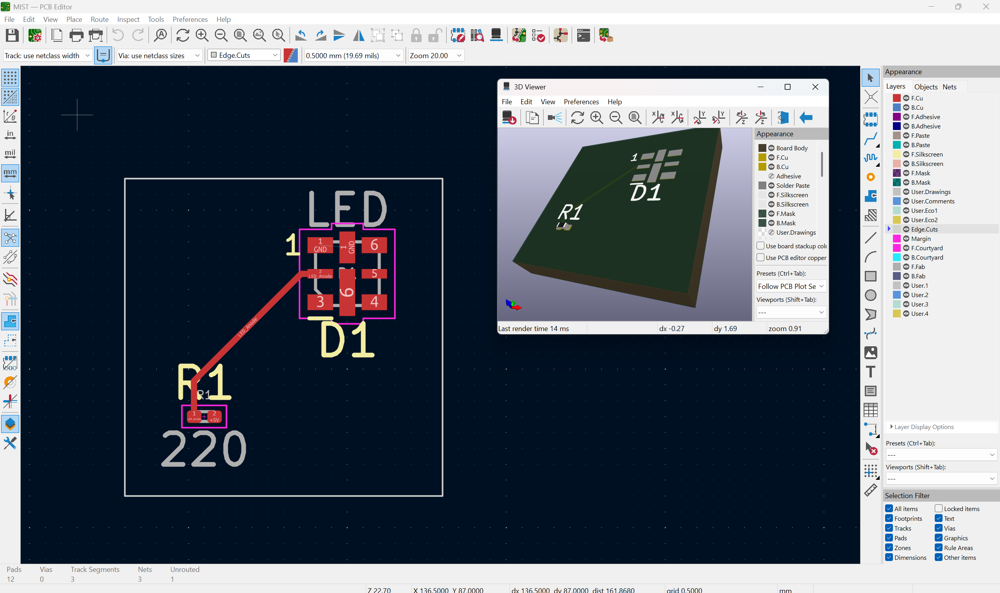

Nicolas Jao
4th Year BTech Automation Systems Engineering Technology Student - Smart Systems Stream
ResumeProject 01
Mac RoboMaster
In 2026, I worked on firmware for a motor control board for linear actuators, tested sending CAN messages to motors, and helped troubleshoot bugs and short circuits in our robots. In 2024, I assisted the Control Lead with the inverse kinematics of our Engineer Robot for the control of a 7 DOF robotic arm. I also worked on our team website! (see link above). On this team I use tools such as MATLAB, VSCode and Embedded C, and STM32 and CubeMX.


Project 02
PCB Design
This is the newest project I am starting and the details are still being finalized. This is a final project in my Embedded Systems course and will be an introduction to PCB design and manufacturing. I will be using tools such as KiCad and soldering.

Project 03
Sushi Assembly Line
This is my Capstone project. We are making an automated sushi assembly line that dispenses rice, adds toppings, rolls, and cuts sushi rolls for the user. A UR robot may be used to pick and place the sushi onto a plate (for epic presentation purposes). I am using tools such as Onshape CAD, Arduino controller and stepper motors, and Arduino IDE, VSCode, and GitHub for programming.


Project 04
Aegis Grid IoT Network
This is the final project in my IoT Networks and Devices course. We are designing a proof-of-concept IoT network for monitoring an electrical power grid. We plan to use sensors to provide real-time data on equipment for preventative maintenance, as well as sensors on the power lines to find the locations of faults when outbreaks do occur. We are using tools such as LoRa or LoRaWAN, Arduino IDE and GitHub, and Node RED for dashboard visualization.